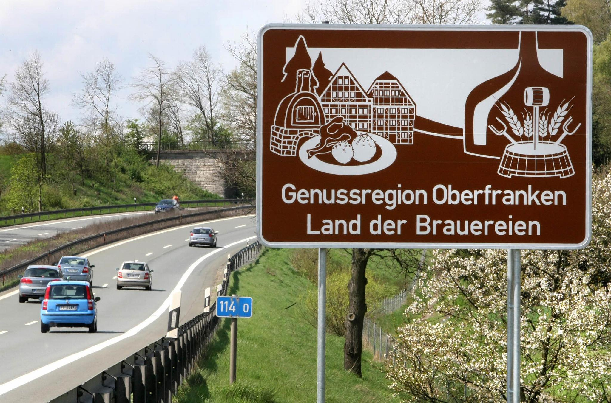

Keller sind sehr wichtig um die innere Ruhe zu finden.
In der Bierhauptstadt Bamberg haben Sie eine großzügige Auswahl an Bierkellern!
Um auch in den Genuss der bambergerischen Essens- und Trinkkultur zu kommen, haben wir hier eine Auflistung von idyllischen und für Franken typischen Bierkellern.
Kommt, klickt euch durch und entdeckt die Genussregion Oberfranken!
